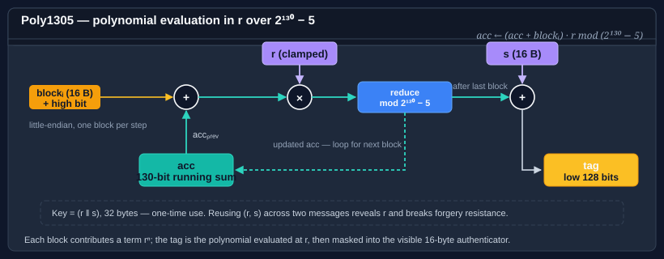

Using Poly1305
Poly1305 is a one-time authenticator designed by Daniel J. Bernstein. Given a fresh 32-byte key and a message, it produces a 128-bit tag whose forgery probability — over the choice of key — is bounded by (message_length / 16) · 2⁻¹⁰². That bound only holds while the key is used exactly once; reusing a Poly1305 key across two messages is a complete break.
In practice Poly1305 is almost always used as the MAC half of an AEAD construction — most famously ChaCha20-Poly1305 (RFC 8439), where the per-message Poly1305 key is derived by encrypting a block of zeros with ChaCha20 under a nonce.
The type is Poly1305. It sits on Bodu's KeyedBlockHashAlgorithm — a HashAlgorithm that adds a Key property — rather than the BCL KeyedHashAlgorithm.

Important
Poly1305 is a one-shot authenticator. CanReuseTransform is false, which is how the type signals at the API level that a key must not be used twice. Do not store a long-lived Poly1305 key — derive a fresh one per message.
Fixed sizes at a glance
| Parameter | Size | Notes |
|---|---|---|
| Key | 256 bits (32 bytes — Poly1305.KeySize) |
Must be fresh per message. Low 16 bytes are clamped per RFC 8439. |
| Tag | 128 bits (16 bytes) | Fixed. |
| Block | 16 bytes | Fixed (the 130-bit arithmetic core). |
Pattern 1 — one-shot MAC
The Key is mandatory and must be set before hashing — the constructor deliberately does not generate one. Computing a hash with no key assigned throws CryptographicException from Initialize, precisely so the type cannot tempt you into reusing an unsolicited random key across messages. Supply a key derived fresh per message (typically from the stream cipher you are pairing with):
using System.Text;
using Bodu.Security.Cryptography;
byte[] message = Encoding.UTF8.GetBytes("the quick brown fox");
using var poly = new Poly1305 { Key = perMessageKey }; // 32 bytes, fresh per message
byte[] tag = poly.ComputeHash(message); // 16 bytes
ComputeHash produces one tag per key. CanReuseTransform is false, so the type signals at the API level that the key must not be reused; assigning a new Key clears the one-time guard for a new message under the new key. If you need to authenticate several messages, derive a fresh key for each (or use Poly1305 only as the MAC inside an AEAD layer).
Pattern 2 — the ChaCha20-Poly1305 construction
RFC 8439 defines the now-ubiquitous AEAD pairing: derive the per-message Poly1305 key by encrypting a 32-byte block of zeros with ChaCha20 under the same nonce, then authenticate the AEAD layout (AAD ‖ ciphertext ‖ lengths) with Poly1305.
using System.Security.Cryptography;
using Bodu.Security.Cryptography;
// Fresh per-message inputs
byte[] chachaKey = LoadSharedKey(); // 32 bytes, long-lived
byte[] nonce = GenerateNonce(); // 12 bytes, unique per (key, message)
// 1. Derive the Poly1305 key from the first 32 bytes of the ChaCha20 keystream.
byte[] polyKey = ChaCha20Keystream(chachaKey, nonce, counter: 0).AsSpan(0, 32).ToArray();
// 2. Encrypt the plaintext with ChaCha20 (counter = 1).
byte[] ciphertext = ChaCha20Encrypt(chachaKey, nonce, counter: 1, plaintext);
// 3. Build the Poly1305 input per RFC 8439 §2.8:
// AAD ‖ pad16(AAD) ‖ ciphertext ‖ pad16(ciphertext) ‖ len(AAD)₆₄ ‖ len(ciphertext)₆₄
byte[] input = BuildRfc8439Input(aad, ciphertext);
using var poly = new Poly1305 { Key = polyKey };
byte[] tag = poly.ComputeHash(input); // 16-byte authentication tag
The key point: polyKey is fresh per message — it's a function of (chachaKey, nonce). If the nonce is unique under a given long-lived key, the Poly1305 key is unique too, and the one-time property holds.
(ChaCha20Keystream, ChaCha20Encrypt, and BuildRfc8439Input are placeholders here — use whichever ChaCha20 implementation you already depend on; the BCL's System.Security.Cryptography.ChaCha20Poly1305 gives you the whole AEAD in one step if you don't need to decompose the construction.)
Pattern 3 — verifying in constant time
Compare a Poly1305 tag with CryptographicOperations.FixedTimeEquals or the VerifyHash helper from Bodu.Security.Cryptography.Extensions:
using Bodu.Security.Cryptography;
using Bodu.Security.Cryptography.Extensions;
using var poly = new Poly1305 { Key = perMessageKey };
bool authentic = poly.VerifyHash(aeadInput, receivedTag);
A SequenceEqual comparison leaks timing information and is unsafe for MAC verification — an attacker who can measure verification time can recover the tag byte-by-byte.
What Poly1305 is not
- Not a general-purpose MAC. A single key authenticates a single message. For a long-lived MAC key, use HMAC (
System.Security.Cryptography.HMACSHA256) or KMAC. - Not a hash. Without a key, Poly1305 is trivially collidable. It is a keyed authenticator by construction.
- Not a standalone AEAD. The authenticator alone provides integrity; pair it with a cipher (ChaCha20, or another stream-style primitive) to get confidentiality.
Where to go next
- Hashing overview — where Poly1305 sits alongside SipHash, Tiger, and the non-cryptographic families.
- Using SipHash — the keyed short-input hash; reusable key, not a one-shot.
- AEAD modes guide — AES-based authenticated encryption in this package.
- Bodu.Security.Cryptography namespace page.
- Hashing & Cryptography guides — every guide in this topic, across Bodu.IO.Hashing and Bodu.Security.Cryptography.